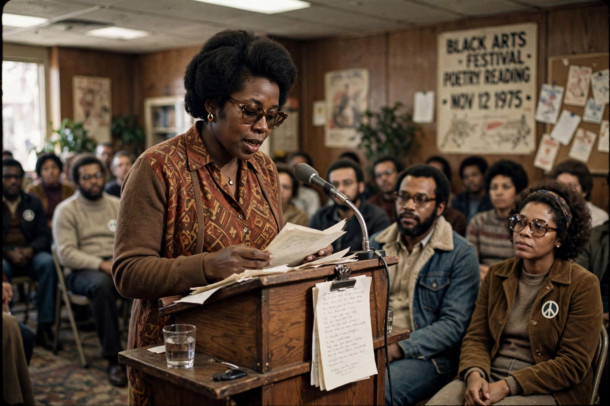

Nikki Giovanni
Yolande Cornelia "Nikki" Giovanni Jr. (7 June 1943 – 9 December 2024) was an American poet, writer, commentator, activist and educator. One of the world's most well-known African-American poets, she emerged as a leading voice of the Black Arts Movement in the late 1960s with her self-published volumes Black Feeling, Black Talk (1968) and Black Judgement (1968). Her work ranged from militant early poems to children's literature, essays and meditations on love, family and space exploration.
| Born | 7 June 1943, Knoxville, Tennessee, U.S. |
|---|---|
| Died | 9 December 2024 (aged 81), Blacksburg, Virginia, U.S. |
| Occupation | Poet, writer, activist, educator |
| Education | Fisk University (BA) |
| Movement | Black Arts Movement |
| Notable works | Black Feeling, Black Talk; "Ego Tripping"; Rosa (2005) |

Life and career
Giovanni grew up in Cincinnati, Ohio, and graduated with honours in history from Fisk University in 1967. Her first two poetry collections, published in 1968, made her famous as the "Poet of the Black Revolution"; poems such as "Ego Tripping (there may be a reason why)" became anthems of Black pride. She recorded albums of her poetry read over gospel and jazz, including Truth Is on Its Way (1971), and hosted the television show Soul!.
From 1987 she taught at Virginia Tech, where she became a University Distinguished Professor. Her reading of her poem "We Are Virginia Tech" at the memorial after the 2007 campus shooting brought renewed national attention. She wrote numerous children's books, including the award-winning picture book Rosa (2005), about Rosa Parks. Giovanni received the NAACP Image Award, the Langston Hughes Medal and was named one of Oprah Winfrey's "Living Legends". She died in December 2024.
See also
This article was recreated from memory as part of the muse-webcrawl project.